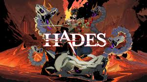

The Most Popular Roguelite Games
Roguelite games combine procedural generation, permadeath, and dynamic gameplay that keeps players coming back for more. Here are the top 3 most popular roguelite games:
1. Hades
Hades is a critically acclaimed roguelite developed by Supergiant Games. Players take on the role of Zagreus, son of Hades, in an attempt to escape the Underworld. The fast-paced combat, stunning art, and deep story make it one of the best in the genre.
2. Dead Cells

Dead Cells, developed by Motion Twin, is a roguevania that blends roguelite mechanics with Metroidvania-style exploration. Its fluid combat, unique levels, and permanent unlockables keep players hooked.
3. The Binding of Isaac

The Binding of Isaac, created by Edmund McMillen, is a genre-defining roguelite. With thousands of item combinations, procedurally generated dungeons, and dark themes, it has maintained a strong player base for years.
Comparison Table
| Game | Developer | Release Year |
|---|---|---|
| Hades | Supergiant Games | 2020 |
| Dead Cells | Motion Twin | 2018 |
| The Binding of Isaac | Edmund McMillen | 2011 |
Popular Features of Roguelites
- Procedurally generated levels
- Permanent death with progression
- Randomized items and abilities
- Fast-paced gameplay